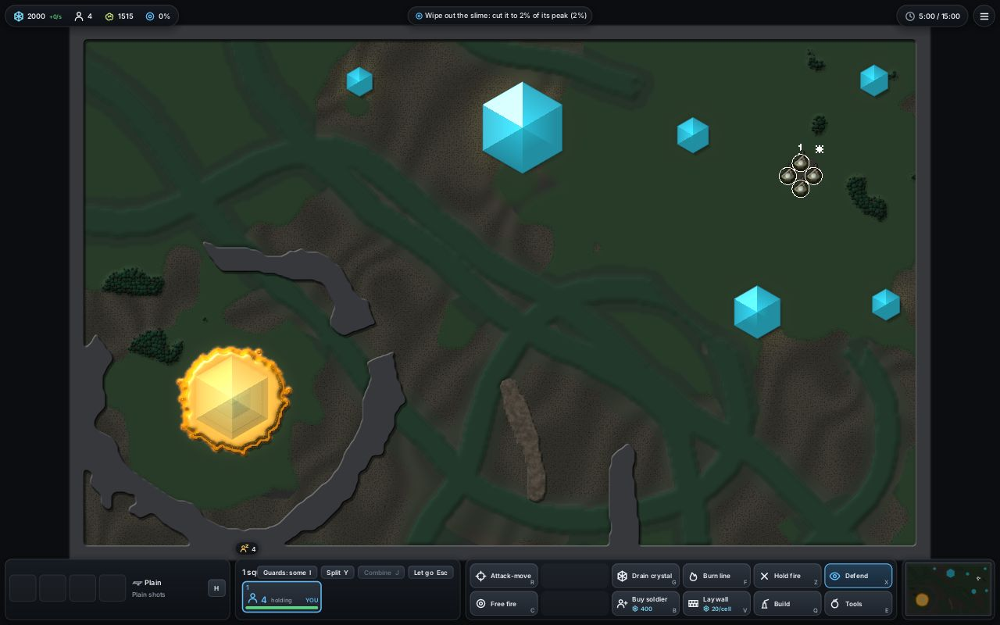
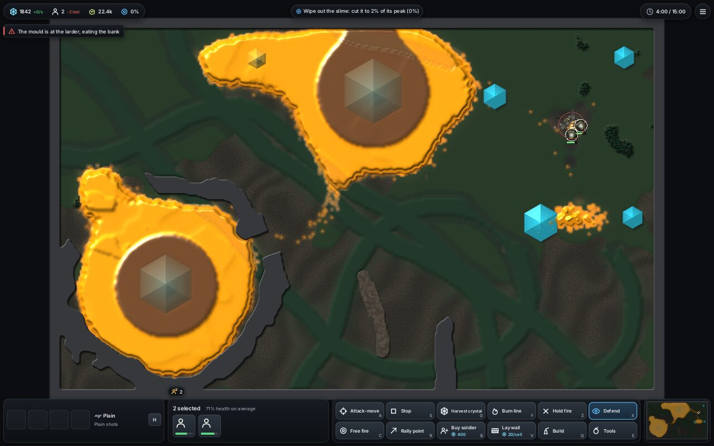
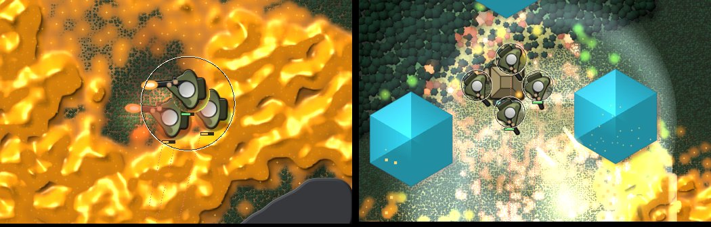
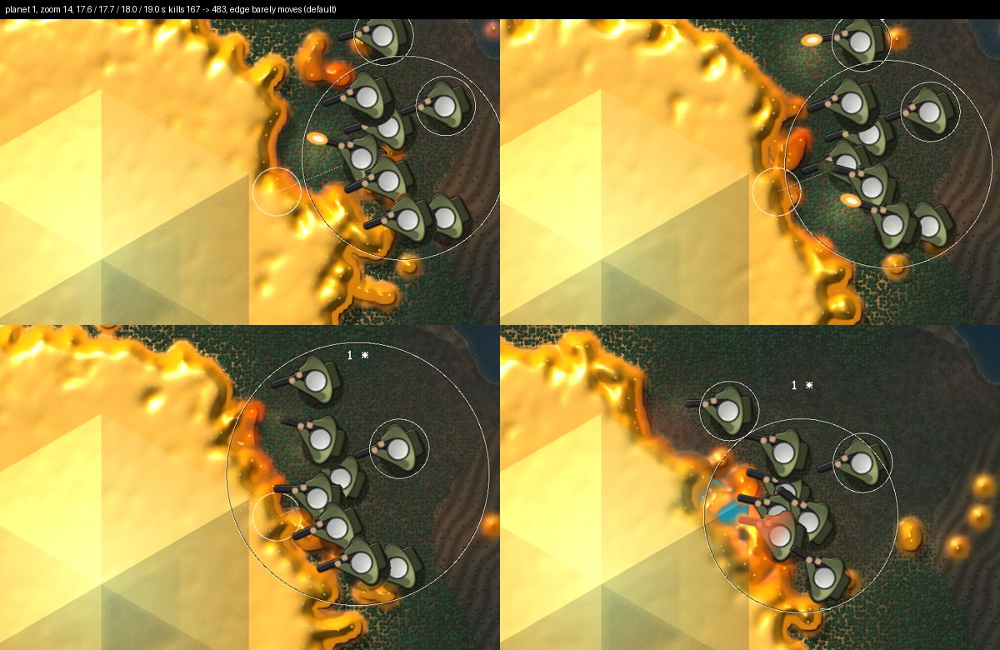
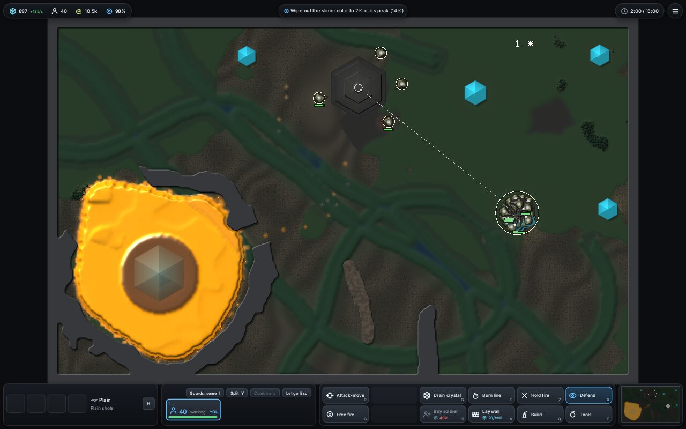
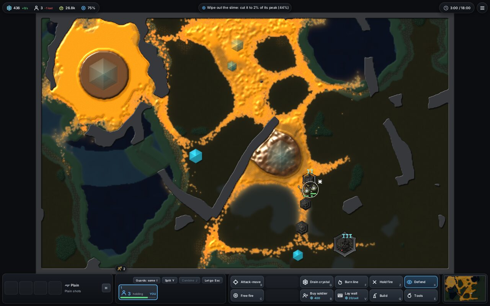
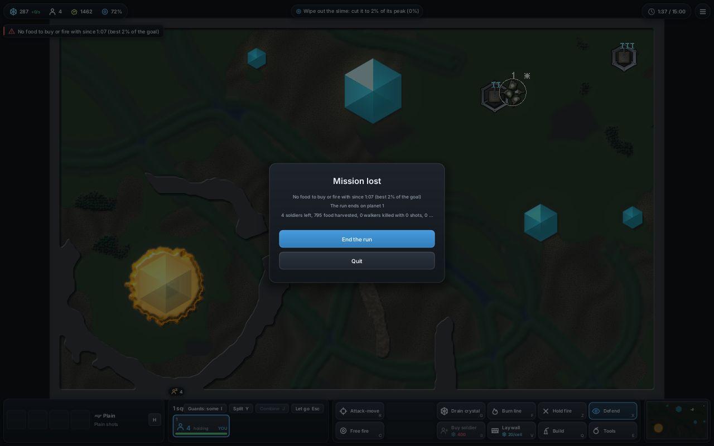
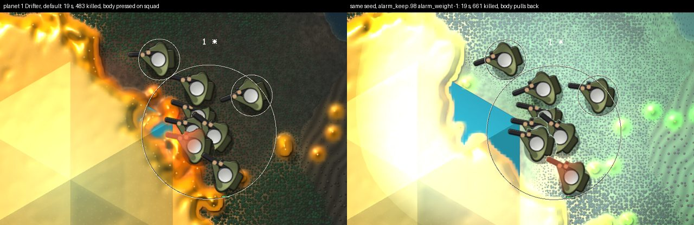
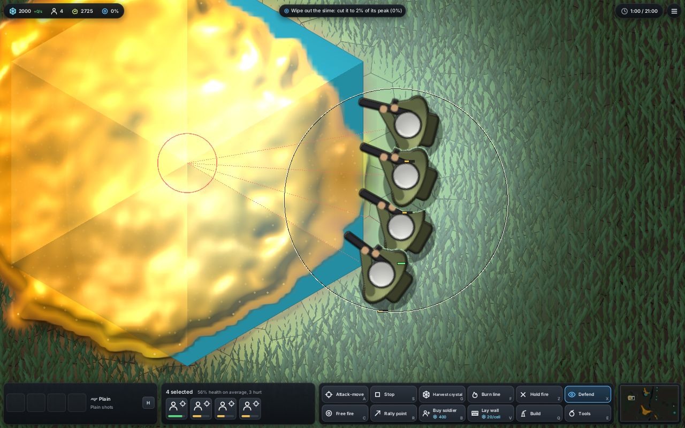
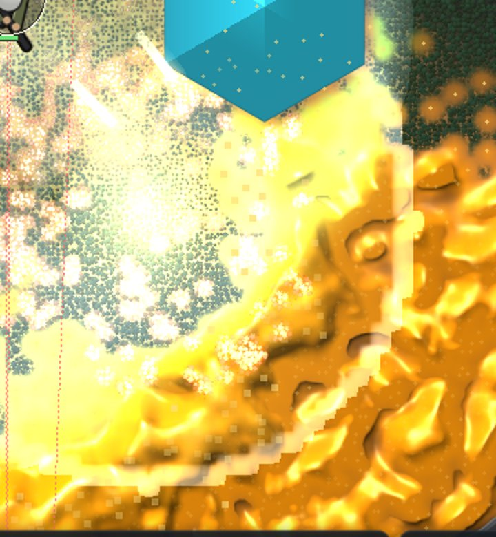

Five reviewers each played the game for themselves on the cloud machine (first-time player, game director, simulation to play, engineering health, roadmap and process), then one merge ranked and checked their findings. Your 08:30Z play notes were the only human evidence; scripted hands are controls, never "players".
All five reviewers' top finding was that the run's slime shrinks to its home crystal in 30 s and sits there, so there is no rush and nothing to defend. That was true when they filmed it, and it matched what you saw. But the run was playing the bare race slime by mistake. #336 (shape C in the run), #338 (fed slime thickens) and #339 (thick slime breaks away) merged during the review, so I filmed the same planets again on today's main.


| Capture (seed 1) | Before | Now |
|---|---|---|
| Planet 3, idle | 1,581 at 1:00, 1,658 at 2:30; 15 of 16 crystals untouched | 46,434 at 1:00, 28,554 at 2:00, a network across the map |
| Planet 1, squad hand | slime wiped by 0:26-0:30 | 16,241 at 2:00; 7 of 8 soldiers left |
| Planet 1, pumps hand | pumps 200/200; run lost to the "stuck" rule at 1:37 | one pump worn to 75/200 by 3:00 |
| Planet 3, pumps hand | not filmed | 2 of 4 pumps worn to 0 by 3:00, others 25 and 87 |
| Planet 1, greedy hand (your plan) | 38 soldiers at 2:00 | 40 soldiers at 2:00; slime 10,461 |
So "the slime sits and nothing needs defending" is largely fixed on main, and the next playtest should show it. Your plan still works, though: drain the biggest crystal and buy to 40 soldiers by 2:00. The ranking below is re-cut around what is still true.
Building now (guns thread): every plain hit becomes a small simulated burst that flings a few walkers and opens a one-cell crater, with the bullet drawn in flight and the soldier's recoil. It goes to you as a blind A/B GIF. Also the square-glow fix and a body look that shows thinning in dense slime.
Waiting for you: start the run with one payload card (D5), and whether camera shake and hit-stop are allowed (D6).


Waiting for you (D7): brake it now through the economy (cap how many soldiers can drain one crystal, or raise the soldier price 10% each), or first play the new slime and see whether it brakes the rush by itself.

Asked for a new thread, "Run and enemy progression": it owns the ladder, a page plotting your squad's kill rate against the slime's mass by depth, one still per tier on its planet, a run smoke check (idle loses by 5:00), and the stuck-rule fix below.
Waiting for you (D3): what rises from planet to planet. The recommendation is one thing each tier does to you: the Drifter eats your drained crystal, the Sprawler cuts your supply, the Trunk cords to your pumps, the Swarmer's alarm brings the body.

Going to the new run thread: a walking squad or a standing pump is not stuck; warn before ending.

Going to the slime thread, with the guns thread: a short flinch (alarm keep about 0.9) on every tier, shown as an A/B.

This thread does it next: a Now band built around the run in squad mode (enemy progression, the slime, a reason to defend, guns, menus, planets, bugs, the 1070, a playtest pack), a short "where the game stands" in HANDOFF, the 11-15 rulings recorded, and a parked list. A play log (time to N soldiers, splits, pumps, shots) goes to the new run thread.

Reports/README.md, pages.md) bounce PRs off the queue. A union merge rule would stop that.play.cmd from pulling.Asked for a new engineering-chores thread for the first four. The GPU stall and caps go to the guns thread, for timing on the 1070.

None of these blocks the work above. Each has the reviewers' recommendation.